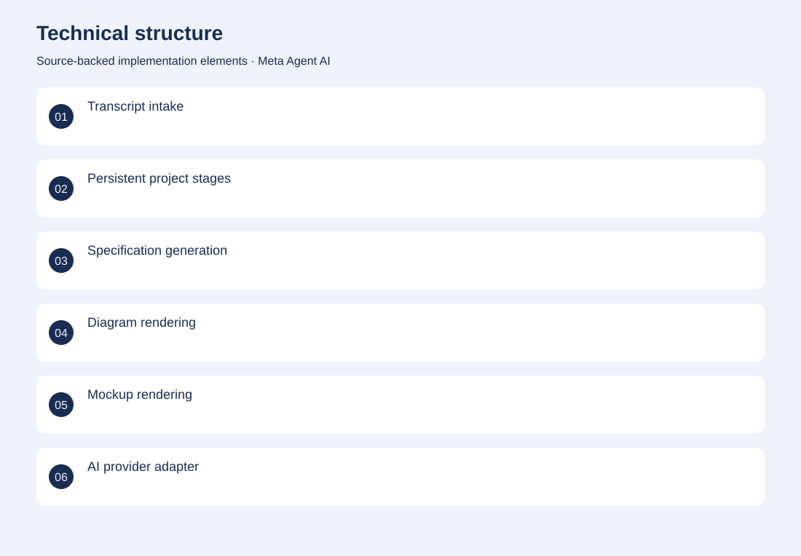
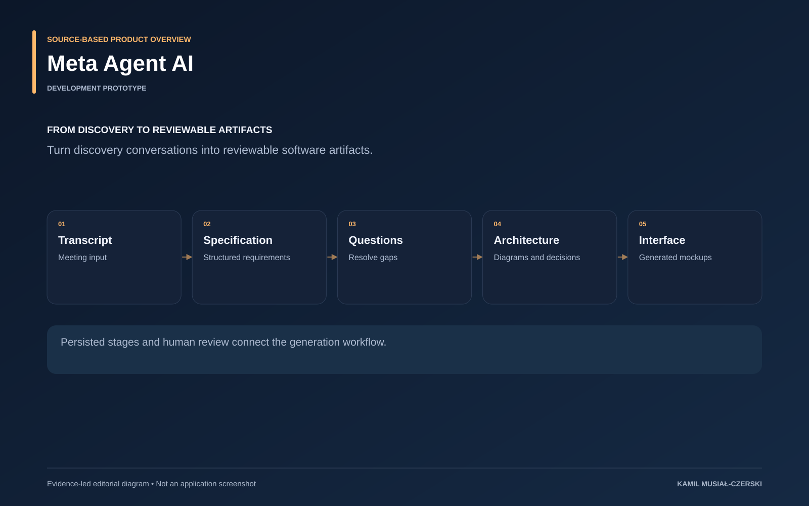

The project
A project progresses through persisted stages from transcript to specification, questions, diagrams and interface artifacts. Model integrations are separated from the web workspace, and generated results remain visible and editable. This makes discovery-to-implementation work reviewable while allowing individual stages to be revisited.
The problem
The gap between a discovery meeting and an implementable specification is often inconsistent and manual.
The solution
Persisted project stages and human approval connect transcript processing with artifact generation and local model integrations.
My contribution
Connected transcript intake, persistent project stages and human-reviewed generation of specifications, diagrams and mockups.
AI capabilities
Specification generation; Gap detection; Diagram and UI generation; Code-generation workflow
Technical structure

Product overview

The portfolio cover is an editorial illustration. No live product screenshot is presented for this project.
Showcase assets
{kind=link}
{kind=link}
{kind=link}
New portfolio identity. Newly designed marks are portfolio treatments, not claims of official client branding.